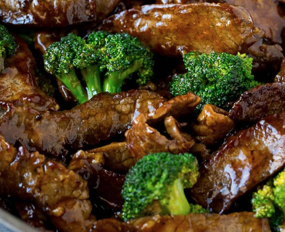

Sasha's Beef Broccoli

Description
A wonderful winter dish asian style dish, meant to make you smile when you're sad.
Remember it is very okay to use cheap beef for this recipe.
Ingredients
- Beef
- Broccoli
- Flour
- Rice
- Soy Sauce
Steps
- Boil rice and let it sit
- Coat the beef in seasoning and flour
- Fry the beef until it is rare, then remove from pan
- Cut the beef into cubes
- Fry the broccoli in the beef juice
- Add soy sauce and the beef
- Serve on top of rice